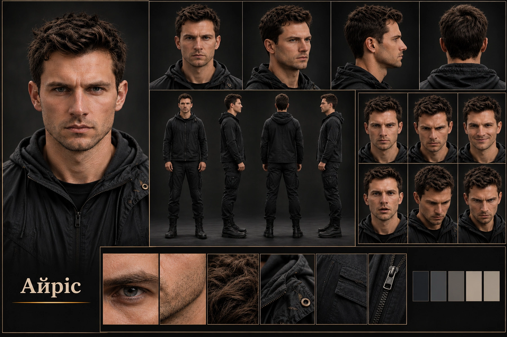

ОСНОВНА ІНФОРМАЦІЯ
Фахівець із міжпланових перенесень
Айріс — характерник Нульового плану. Його спеціалізація — складні портальні операції, у яких недостатньо просто відкрити перехід у потрібному місці. Він уміє змінювати форму й положення порталу під час руху, точно узгоджувати його з конструкцією та підтримувати стабільність переходу протягом тривалої операції.
Статус: характерник Нульового плану
Спеціалізація: керування порталами та міжпланові перенесення
Зовнішність: темне скуйовджене волосся, легка щетина, темний одяг — за затвердженим зображенням
Вік: у перевірених рукописах не зазначений
ДЕНЬ 7 · ПЕРЕНЕСЕННЯ МІСТА-ШЛЯХУ
Рішення, яке не можна було доручити будь-кому
Коли Сухум запропонував перенести місто-шлях на планету-курорт і розмістити його кільцем навколо поселень, Айріс пояснив, чому звичайна схема перенесення підземних міст тут не підходить. Стара технологія зберігала початкову геометрію споруди, тоді як місто-шлях мало змінити лінійну форму на замкнену систему.
Айріс розглянув варіант із рухомим порталом. Характерник мав перебувати в шатлі, вести перехід уздовж конструкції та постійно змінювати його форму відповідно до траєкторії майбутнього кільця. Особливо складними були масивні опори: для проходження кожної з них портал потрібно було перебудовувати, не втрачаючи стабільності.
Він відразу попередив Сухума, що ймовірність успіху невелика, адже все навантаження лягало б на одного характерника. Попри це Айріс сам запропонував виконати операцію. Він не обіцяв гарантованого результату, але був готовий особисто взяти на себе ризик.
ДЕНЬ 10 · ПОЧАТОК ПЕРЕНЕСЕННЯ
Точність на кожному відрізку
Підготовка виявила навіть незначну похибку в розрахунках. Під час моделювання всього маршруту стало зрозуміло, що мале відхилення на початку поступово накопичиться й наприкінці може створити критичне навантаження на ферми міста-шляху. Айріс разом із конструкторами дочекався виправлення алгоритмів і повторного підтвердження розрахунків.
На операцію він вирушив із пілотами та інженерами, але без іншого характерника: портал мав утримувати сам Айріс, а додатковий характерник не усував головного ризику. Інженери контролювали стан конструкції та опор, пілоти тримали шатл на розрахунковому курсі, а технічні команди були готові втрутитися за потреби.
Під час початку перенесення Айріс сформував портал навколо визначеної частини конструкції, а потім утримував його точно відносно міста-шляху, поки шатл рухався вперед. Перехід мав пройти вздовж споруди, не порушивши її цілісності та правильного розподілу навантаження між старими й новими опорами.
ТЕХНОЛОГІЇ ТА ВІДНОВЛЕННЯ
Знання, якими він ділиться
Після повернення мандрівників Айріс зустрічає їх разом із Сухумом та Іманом і допомагає зорієнтуватися у світі, який змінився за двадцять років. Він розповідає про міста-шляхи, їхнє значення для виживання людей і поступове відновлення сполучення між уцілілими ділянками.
Айріс також із помітною гордістю розповідає про експериментальну технологію, яка дозволяє підключити звичайну людину до мислезв’язку характерників за допомогою спеціального браслета. На той момент система ще має обмеження: пристрій великий, заряд тримається недовго, а використання супроводжується побічними ефектами. Проте перша людина вже може майже повноцінно користуватися мислезв’язком.
ХАРАКТЕР
Впевненість без самовпевненості
Айріс уважний до технічних деталей і не приховує ризиків, навіть коли сам готовий узятися за найскладнішу частину роботи. Він перевіряє розрахунки, не погоджується на небезпечні спрощення й водночас не уникає особистої відповідальності. У спілкуванні Айріс відкритий до нових знайомств, охоче пояснює зміни та вміє розрядити напругу влучним жартом.